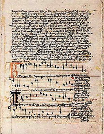

|
|
|
|
|
La bataille de Domazlice On prétend que ce chant aux accents étranges, entonné par l'armée Hussite (les premiers protestants, cent ans avant Luther) commandée par Procope le Chauve et renforcée par 6.000 Polonais hussites, mit en déroute la grande armée impériale du Comte Frédéric de Brandebourg accompagné du Légat du Pape, le Cardinal Cesarini, à DOMAZLICE (ou Taus), le 14 août 1431. Le rédacteur de l'article de Wikipédia intitulé "Kto jsú boí bojovníci" (Vous qui êtes les soldats de Dieu) indique qu'en juillet 1433 les Polonais et Hussites unis contre les Chevaliers teutons de Prusse étaient parvenus jusqu'à Dantzig et, tout en chantant l'hymne hussite, avaient rempli leurs gourdes d'eau de mer pour signifier que la Baltique était désormais slave. Un historien prussien du 19ème siècle, Von Treitschke, s'en était offusqué. L'auteur de ce chant est inconnu, mais on mentionne souvent à son sujet le père du chant populaire tchèque, le prince taborite (une des branches du mouvement hussite) Jan Capek de Sany, le commandant des "Orphelins tchèques". Il l'aurait composé entre 1414 et 1420. Influence du chant sur le Barzhaz Breizh La revue "Magasin Pittoresque", pp. 226-227 de l'année 1837, publia cet hymne hussite. Elle affirme qu'il fut composé en 1480, par Johann Von Trotznow, plus communément connu sous le nom de Zizka. Ce n'est pas la seule erreur que commet cette revue. Sa traduction est on ne peut plus approximative. Selon Francis Gourvil (p. 489 de son "La Villemarqué"), l'auteur du célèbre "Barzhaz Breizh", se serait inspiré de cette traduction de l'"Hymne Hussite" pour composer 5 des 13 strophes de la "Marche d'Arthur", un des chants les plus fameux de l'édition de 1845:
Une supercherie littéraire tchèque Selon Francis Gourvil, cet "hymne des Hussites" serait l'un des textes trouvés sur le "Manuscrit de Dvur Kralové" (Rukopis královédvorský). Ce manuscrit avec celui de Zelená Hora (commune de Klaster près de Nepomuk, dans la région de Pilsen) constitue un ensemble de documents en vieux slave découverts en Bohême (Tchéquie) en 1817. C'est le poète Václav Hanka qui découvre le premier et son ami Josef Linda, le second. Le manuscrit de Dvur Kralové contient quatorze chants, dont six chants épiques, six chants lyriques et deux mixtes qui semblent remonter au XIIIe siècle. Aucun des titres cités dans l'article Wikipédia consacré à ce manuscrit ne ressemble de près ou de loin à la "marche militaire hussite" qui date, d'ailleurs, du XVème siècle ou à son incipit. Le manuscrit de Zelená Hora ou "Libuin soud" («Jugement de Libue»), publié tout d'abord dans le magazine "Krok" semble remonter aux VIIIe siècle et IXe siècle et constituer de ce fait le plus ancien texte en tchèque qui nous soit parvenu. Il ne saurait contenir un texte datant de 1420 environ. Or au terme d'une polémique qui dura près d'un siècle les scientifiques tchèques puis allemands puis tchèques à nouveau ont clairement établi que les auteurs de ces textes n'étaient autres que Hanka et Linda eux-mêmes. Francis Gourvil décrit sur l'équivalent de deux pages (pp. 505 à 507) le déroulement de cette imposture patriotico-littéraire, à laquelle il croit devoir assimiler le Barzhaz et en particulier la "Marche d'Arthur" dont, affirme-t-il, elle s'inspire. De tous les articles que j'ai consultés à ce sujet, il ressort que l'"Hymne des Hussites" n'a rien à voir avec les manuscrits de Hanka et Linda et que ce chant magnifique est authentique et connu de tous. L'illustration ci-dessus est extraite de l'"Hymnaire de Jistebnice", un recueil de cantiques, en latin et en tchèque datant du 15e siècle. On y trouve le texte et la musique de l'hymne des Hussites. Il fut trouvé, en très mauvais état, dans un presbytère de cette petite ville en 1872 et il est conservé aujourd'hui au Musée national de Prague (archive 7 II C). Parmi les chants très connus, l'ouvrage renferme le présent "Vous, les soldats de Dieu" et "Lève-toi, lève-toi, grande ville de Prague!". Que cet antique document n'ait été découvert qu'après la publication dans le "Magasin Pittoresque" d'une version issue de la tradition orale explique sans doute les différences que l'on constate entre les deux traductions françaises. En outre, les ressemblances que Gourvil prétend souligner, pour le moins deux sur trois d'entre elles, sont plus que discutables! Autres rapprochements Pour faire bonne mesure, le barde breton aurait emprunté, toujours selon Gourvil, les strophes 2 et 3 de sa "Marche", à une phrase tirée du "Fingal" de McPherson (Chant II), ce qui est, là encore, assez invraisemblable: "Les guerriers se lèvent comme la houle bleue qui se brise: tous dressés sur la lande ressemblent à des chênes aux branches innombrables dont le vent fait craquer les feuilles desséchées." Et il aurait trouvé dans une troisième uvre apocryphe, le "Chant d'Altabiscar" de quoi composer les strophes 4 à 6. Bref, La Villemarqué aurait mis à contribution trois faussaires pour fabriquer sa propre forgerie! La motivation de ces authentiques écrivains serait la même, nous dit Gourvil: il s'agit de donner à leur pays, l'Ecosse, le Pays Basque, la Bohème, la Bretagne, la littérature nationale antique qui leur fait défaut. Appliquées à la Marche d'Arthur, ces considérations sont inopérantes et l'authenticité de cette pièce reste un mystère. |
The battle of Domazlice This haunting hymn was allegedly stricken up by the Hussite army (the first Protestants, a hundred years ahead of Luther!) led by Prokop the Bold and backed up by 6.000 Polish Hussites, on 14th August 1431, when they routed Emperor Sigismund's crusaders under Count Frederick of Brandenburg, accompanied by papal legate Julian Cesarini, who were besieging the town DOMAZLICE. As stated by the contributor of the Wikipedia article titled "Kto jsú boí bojovníci" (Ye who are God's warriors) in July 1433 the Polish and Hussites united against the Teutonic Knights of Prussia had marched as far north as Danzig and, while singing the Hussite Hymn, had filled their gourds with brine, to mean that the Baltic was henceforth a Slavic sea. A Prussian 19th-century historian, von Treitschke referred to it with indignation. The composer of the song is not known. It is surmised that he could be the founder of Czech sung poetry, the Taborite (one of the branches of the Hussite movement) Jan Capek from Sany, the commander of the "Czech Orphans". He might have composed it between 1414 and 1420. Influence of the song on the Barzhaz Breizh The periodical "Magasin Pittoresque" published this Hussite Hymn, on pp. 226-227, in 1837, asserting that it was composed in 1480, by Johann von Trotznow, also known as Zizka. This is not the only mistake this periodical made. Its version of the song is filled with translation errors. According to Francis Gourvil (p. 489 of his "La Villemarqué"), the author of the famous "Barzhaz Breizh", availed himself of this translation of the "Hussite Hymn" to compose 5 of the 13 stanzas of "Arthur's March", one of the best known pieces in the 1845 edition:
A Czech literary hoax According to Francis Gourvil, this "Hussite Hymn" was one of the poems found on the "Dvur Kralové MS" (Rukopis královédvorský). This manuscript and the Zelená Hora MS (a castle at Klaster near Nepomuk, in the Pilsen area) make up a body of Slavonic documents discovered in Bohemia (the Czech Republic) in 1817. The poet Václav Hanka discovered the first and his friend Josef Linda, the second MS. The manuscript of Dvur Kralové encompasses fourteen songs, six of which are epic, six lyric and two hybrids. They seem to date back to the 13th century. However, none of the 14 titles quoted in the Wikipedia dedicated to this MS resembles in any way the "Hussite War Hymn" which, by the way, was assumedly composed in the 15th century, or its incipit. The Zelená Hora MS, also known as "Libuin soud" («The Judgment of Libue»), was first published in the journal "Krok". It seemed to have been composed in the 8th and 9th centuries and could be, therefore, the oldest Czech text passed down to us. It could impossibly harbour a text probably written ca. 1420. Now as the result of an argument that lasted for nearly a century, Czech, then German, then, again, Czech scholars clearly proved that the authors of this poetry were no others than Hanka and Linda themselves. Francis Gourvil describes, over two pages or so (pp. 505 with 507), the progress of this patriotic-literary imposture, with which, in his opinion, the Breton song collection "Barzhaz Breizh" may compare, in particular "Arthur's March", since it was inspired by it. I went through a lot of articles on this topic. Nowhere did I read that the "Hussite Hymn" was, near or far, related to Hanka's and Linda's forgeries. On the contrary it appears that this wonderful hymn is thoroughly authentic and deservedly well known of all in the Czech country. The above picture is a page of the "Jistebnice Hymn Book" with the "Hussite Hymn", tune and lyrics, on it. It is a collection of hymns in Latin and Czech dating from the 15th century. It was discovered, in a very bad state, in a presbytery of this little town, in 1872, and is now kept in the National Museum in Prague (exhibit 7 II C). Among other very well known songs, the collection includes the present "Ye that are God's warriors" and "Rise, rise, great city of Prague!" That the old MS was discovered after the publication in the "Magasin Pittoresque" of an orally circulating version in translation may account for the discrepancies between both French translations. On the other hand, at least two of the three blatant similarities which Gourvil claims to highlight, if not all of them, are very questionable! Other parallels And, just to make things complete, Gourvil suspects that the Breton Bard borrowed stanzas 2 and 3 of his "March of Arthur", from a sentence he found in the poem "Fingal" by McPherson (Song II), which is, again, rather unlikely: "The heroes rise like the breaking of a blue-rolling wave. They stood on the heath, like oaks with all their branches round them... and their withered leaves rustle to the wind." And he found allegedly in a third apocryphal work, "The Song of Altabiscar" the raw material for his stanzas 4 with 6. To put it in a nutshell, La Villemarqué applied to three forgers to produce his own forgery! The motivation of those anyway genuine writers is the same, so writes Gourvil: they aim at bestowing upon their individual countries, Scotland, Basque Country, Bohemia, Brittany, the ancient literary treasures that they lack. When applied to the "March of Arthur", these considerations are meaningless. The genuineness of this piece remains a secret sealed with seven seals. |